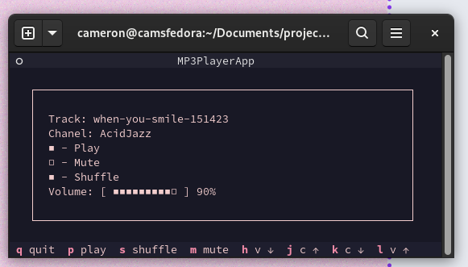

LoFi Terminal
Date: 2024-08-11
Last Updated:
LoFi Terminal Radio
Announcing My LoFi Terminal Radio
This was a short weekend project I threw together to replace the perpetually open YouTube Tab for lofi beats to relax/study to. The result? A minimalist audio player that does its job without any frills. Here's why I created it and how it works.
What is it
In short, it is an audio player with a very specific emphasis on being: - minimalist - distraction-free You cannot select tracks, replay tracks or go to the next track. This is a feature, not a shortcoming. If you want different music, change the station.
The aim of this is to provide an experience akin to radio. You can turn it on, change the volume and switch the channel, but the programming is up to the DJ.
Why Design it like this
This program isn't to replace your spotify or main music player. Instead it is to replace your lofi beats to relax/study to Youtube tab that stays open while you work. The channel has 15k streamers on it when I checked, and has streaming uninterrupted since July 2022.
Why does this exist? Much like some art makes you think, and some exists just to decorate space. Some music exists to make you think, and some exist to decorate time. When you get these two types confused your "background music" can become the focus, distracting you from the work you are meant to be doing. These "lofi hip-hop" streams exist to play background music and remove the temptation of fiddling with the playlist.
The problem is, a 1080p video stream running in a web browser is super-overkill for listening to music. It wastes network bandwidth, computer memory, and CPU cycles. On top of this, it removes the distraction of fiddling with playlists but replaces it with the visual clutter of an unnecessary browser tab next to your actual work
My Solution
A tool to replace this should have 1. No way to select tracks or configure playlists from the UI 2. Stay out of the way when you aren't using it
For this, I settled on a discrete terminal app that I can stash neatly out of the way. Especially when I leave it running in my Quake Terminal extension for GNOME.

Where Do I install it?
Install instructions at My Repo
Customising it
Colours!
The UI is determined by css, with the colours defined at the top of the file. Change your colour scheme to whatever you want just by changing the hex codes at the top of the css file.
Keybindings!
Don't like vim? Iwon't hold it against you. There is a simple text file of the keybindings. Change the key to whatever you need.
Does it work on:
- Linux
- Yes! I have tested it on two machines and a virtual machine
- Mac
- Probably! I haven't tested. Try it and let me know. I can't afford a Macbook.
- Windows
- Eventually! There are some bugs specific to Window's implementation of Python. (Or maybe Linux's implementation?) Either way, it doesn't work as perfectly on Windows. It will be fixed when I get around to it.
This is all well and good, but who has MP3 files anymore?
You got me there! Spotify support isn't really something I can be bothered messing with. Instead, I built my playlists from the Royalty Free resources available at Pixbay, but for artists, you are genuinely fond of you can actually support them by buying their music through Bandcamp.
Technical Details
Frameworks
- Both the backend and UI are written in Python
- Backend uses PyGame to handle the mp3 playback
- Frontend uses the Textual Framework to handle keybindings, and tcss for a css-like experience configuring the UI
How it works:
- The player process grabs a directory of mp3 files, and a playlist object grabs each file one at a time, and throws it at the player object when it needs a new song.
- A queue is used to pass commands from the UI in TUI.py, to the process in musicPlayer.py and messages back in the other direction.
Customisability
At the moment the application is optimised for my specific use case. And I am very opinionated. This means: -The entire program is controlled from the keyboard, with vim keybindings - No "Next" button is exposed in the UI.
Thankfully, the frameworks used are very flexible, allowing for easy
hackability. To change the colours of the UI, you only need to change
the hexcodes in style.tcss. To add mouse support, you can easily
implement buttons using Textualise's built-in widgets. In fact, the
repo has a spare folder for GUI elements I designed, (then removed) to
get you started.
The process also already has a command written for the next track. You only need to add the UI element if you really want it.
Future Changes
Future changes are unlikely because it currently fits my use case. However for the sake of completeness, here is how I may extend the application. - Custom theming. - At the moment I have a Catpuccino theme hardcoded into it. An implementation to vary the colour scheme would be simple to implement and highly beneficial - Implement GUI and Mouse Support. - I have a soft spot for text-only UIs, which is why it is implemented like this. The framework does support buttons for mouse UIs though. The app does work with buttons but I thought they were ugly and removed them. Check the commit history for implementation -Old School animated music visualiser: - This is somewhat antithetical to the design philosophy, but they are a lot of fun. I plan on building one eventually.\
- GUI Support Cont: Implement a list feature for all the stations.
Conclusion
The LoFi Terminal Radio aims to provide a distraction-free, resource-efficient alternative to streaming background music. If you're looking for a minimalist approach to your work soundtrack, give it a try! Feedback and contributions are always welcome.